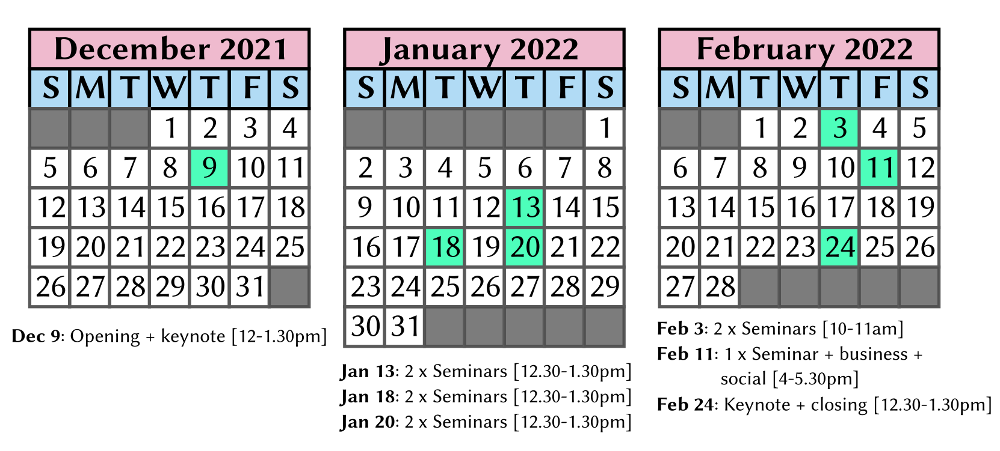

ADCS 2021 Programme
Note that all times are in Australian Eastern Daylight Time (AEDT), UTC+11.
You can import the programme to your calendar using this .ics file.
Updates
We have moved the seminar which was originally on Thursday January 27th back to Tuesday January the 18th to avoid a clash with the SIGIR deadline.
Overview
ADCS will run as 7 seminars starting on December 9, 2021, through to
February 24, 2022. The following image shows the program overview.

Full Program
Thursday 9 December, 2021
Thursday 13 January, 2022
| 12.30pm-1.30pm (GMT+11) |
Seminar Session 1 |
|
Hierarchical Clustering of Corals using Image Clustering - Rudra Sawant, Gianluca Demartini, and Tom Bridge
|
|
Cost-Effective Updating of Distributed Reordered Indexes - Joel Mackenzie and Alistair Moffat
|
Tuesday 18 January, 2022
| 12.30pm-1.30pm (GMT+11) |
Seminar Session 2 |
|
Document Clustering vs Topic Models: A Case Study - Meng Yuan, Pauline Lin, and Justin Zobel
|
|
MeSH Term Suggestion for Systematic Review Literature Search - Shuai Wang, Hang Li, Harrisen Scells, Daniel Locke, and Guido Zuccon
|
Thursday 20 January, 2022
| 12.30pm-1.30pm (GMT+11) |
Seminar Session 3 |
|
Annotation of Struck-out Text in Handwritten Documents - Hiqmat Nisa, Vic Ciesielski, James Thom, and Ruwan Tennakoon
|
|
Cohort-based Clinical Trial Retrieval - Bevan Koopman and Guido Zuccon
|
Thursday 3 February, 2022
| 10am-11am (GMT+11) |
Seminar Session 4 |
|
Passage Based Answer-Set Graph Approach for Query Performance Prediction - Ghulam Sarwar and Colm O'Riordan
|
|
Crowdsourcing Backstories for Complex Task-Based Search - Manuel Steiner, Damiano Spina, Falk Scholer, and Lawrence Cavedon
|
Friday 11 February, 2022
| 4pm-5.30pm (GMT+11) |
Seminar Session 5 |
|
An Analysis of the Australian Political Discourse in Sponsored Social Media Content - Lei Han, Rudra Sawant, Shaoyang Fan, Glenn Kefford, and Gianluca Demartini
|
|
Business Meeting
|
|
Social Event
|
Thursday 24 February, 2022